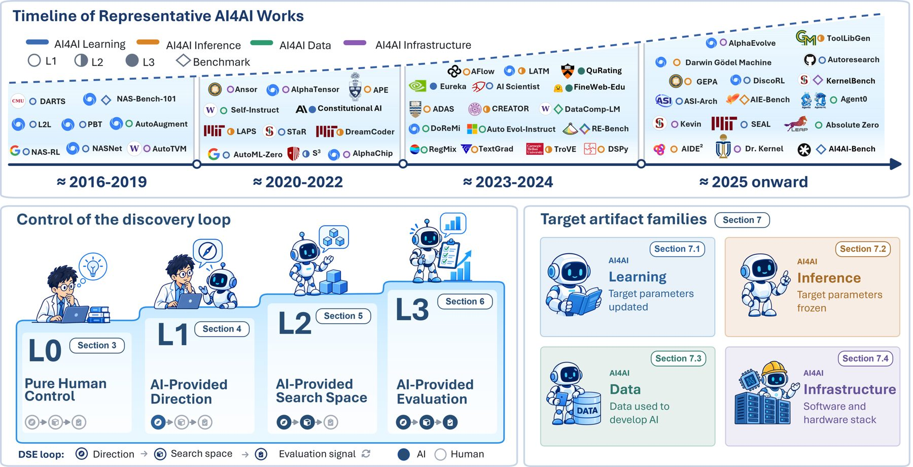
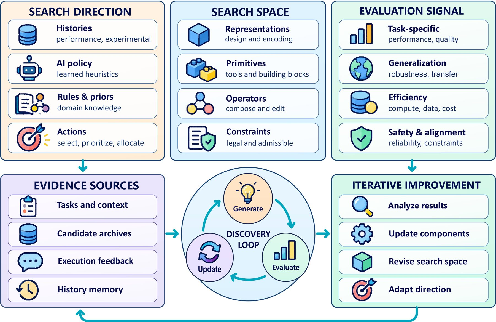

一文读懂 AI4AI:AI 帮 AI 做研究,到底是谁说了算?
论文解读 · 《AI4AI: Toward AI-discovered Superintelligence》(南开、中关村学院、西安交大、上海交大、南洋理工、新加坡国立、港科大,2026-10)。按 ai-writing 的论文解读流程写成:原文抽取 → 初稿 → 润色 → 对照原文审稿 → 修改 → Kimi 润色 → 锐评 → 去 AI 味。整理于 2026-11-18。
现在很多系统都号称「AI 在自己做研究」：自动改代码、自动跑实验、自动写论文。但流程跑完了，真就是 AI 在主导吗？
南开大学、中关村学院、西安交大、上海交大、南洋理工、新加坡国立和港科大的研究者合写了一篇 80 页的综述《AI4AI: Toward AI-discovered Superintelligence》，引了 336 篇文献。答案很干脆：衡量研究自主权，不看 AI 执行了多少任务，而看哪些决定是 AI 做的。§1
标注说明:要点 每节开头的关键信息 · 高亮 核心结论 · §3.6 原文章节 / 图表位置,可对照 PDF 查找。
一、先分清两件事：「执行流程」和「掌握决定」
- 衡量研究自主权,看 AI 做了哪些决定,不看它执行了多少任务。§1
- AI4AI 的硬性条件:AI 要实质参与发现,而不只是执行写好的流程。§2.1
AI4AI（AI for AI）就是用 AI 来发现和改进 AI 系统本身。论文把它看作 AI for Science 的分支，只是研究对象换成了 AI 自己。硬性条件是：AI 要实质参与发现，而不只是跑写好的流程。
自动化的范围确实在变大：从超参数搜索、AutoML（自动机器学习）、神经架构搜索，到 FunSearch、AlphaEvolve 自动改程序，再到 prompt 和 agent 结构也能自动优化；The AI Scientist 甚至把想点子、做实验、写报告串成了一条流水线。
但论文提醒：自动化范围变大，不等于研究自主权变大。人可能仍决定研究什么问题、允许改哪里、什么算成功。反过来，也可能人亲手做实验，而 AI 已经在改写「什么算进步」。

二、三个决定，一张责任档案
- 发现循环里有三个决定:方向(D)、空间(S)、评测(E)。§1 · Figure 2
- 按 E > S > D 的优先顺序定级:评测是 AI 定的就是 L3。§3.6
- 梯子描述的是控制从哪来,不是能力有多强。§1 · §3.6
论文把 AI 开发看成发现循环：提候选改进，评测，再根据反馈选择或修改。循环里有三个关键决定。拿系统性能调优打比方：
- 搜索方向（D）：往哪找。好比先查数据库还是先查网络。
- 搜索空间（S）：能改什么。好比变更白名单：哪些配置项、哪些模块允许动。
- 评测信号（E）：什么算进步。好比验收用的 SLO 和回归测试。

每个系统可以记一张责任档案 ⟨D, S, E⟩。每一项标 H 或 A。注意，H 不只指人，也包括外部固定的东西§3.5，比如固定的基准测试、固定的评测器；A 指 AI 原创或实质修改的决定。
按最高的 AI 决定分四级：
- L0 ⟨H, H, H⟩：三个决定都不是 AI 定的，对照组。
- L1 ⟨A, H, H⟩：AI 定方向，空间和评测仍由人或外部固定。
- L2 ⟨任意, A, H⟩：AI 构造或实质修改搜索空间，评测仍由人或外部固定。
- L3 ⟨任意, 任意, A⟩：AI 提供或实质修改评测信号。
定级顺序是 E > S > D：评测是 AI 定的就是 L3，否则看空间，最后看方向。像告警定级，按最敏感的那项触发，不是看系统整体多强。论文反复强调：这把梯子描述的是「控制从哪来」，不是「能力有多强」，级别高不代表更好用、更可靠。§3.6
三、怎么判断 AI 是不是真的「掌握」了某个决定
- 定级靠反事实检验:换掉 AI 产生的部分,搜索轨迹变不变。§3.6 第 3 步
- 起源、针对性、因果作用、可修订这四个性质,只是强度参考,不是定级门槛。§3.5
这是全文最实用的部分，因为很多系统只是「挂名控制」。
核心工具是反事实检验§3.6 第 3 步：把 AI 产生的部分拿掉或换掉，后续搜索轨迹会不会实质改变？不会，就不算掌握控制。和消融实验、A/B 测试一个道理。
论文还划了几条边界：
- 生成候选不等于控制空间§2.1。在给定菜单里点菜，不等于设计菜单。
- 自我修改本身不等于 L2§3.6。改了自己，但改动范围是人划好的，控制空间的还是人。
- 没有持续适应，也不抹杀一次性的实质控制§3.6 第 4 步。
此外，论文用四个性质描述 AI 控制的「强度」：起源（AI 产生，不是人给的）、针对性（根据当前任务证据）、因果作用（换掉结果会变）、可修订（发现不对能改）。它们是汇报时的参考，不是定级门槛§3.5；二元 H/A 标签会掩盖共享控制，混合来源要如实记录，不能「四舍五入」成全由 AI 控制。
论文建议每次报告附一份残余人类控制清单§3.6 第 6 步：人给了哪些种子、模板、原语库、隐藏测试、审批关卡、救援干预和停止规则。评估厂商宣传时，这几乎就是现成的审计清单。
四、几个让人意外的归类
- FunSearch、AlphaEvolve 属于 L1:方向由 AI 引导,空间和评测由人定。§1 · §4.1
- STOP、DGM 在固定边界下是相邻的 L1。§6.5
- L3 不等于全自主,只有 ⟨A, A, A⟩ 才是三个决定都交给 AI。§3.6
用这套方法去量，一些名气很大的系统级别并不高：
- FunSearch、OpenEvolve§4.1 是论文点名的典型 L1。AlphaEvolve 也根据评测历史引导程序搜索，在人划定的编辑范围和人写的评测器里工作，同样放在 L1；若某次部署让 AI 自己定义编辑边界，要记额外的 L2 控制。
- STOP 和达尔文哥德尔机（DGM） 会反复修改「改进者」或编码 agent 本身，但在论文的固定边界下，是相邻的 L1 系统§6.5；只有当 AI 产生的评测器或验收规则决定下一次修改时，才算 L3。论文特别提醒：反复自我修改，本身不能证明收益会持续。
- 真实的 L2 例子Table 6：S3 让 AI 设计 ViT 架构搜索里「哪些取值是允许的」，即由 AI 来划搜索空间。
- L3 的例子§4.5 · Table 6：Eureka 根据环境结果进化奖励程序，由 AI 来写「什么算好」；论文表格里 Constitutional AI 也标为 L3（AI 产生批评、修订和偏好标签，而宪法条款、有害性规则和基础模型由人固定）。这正好说明，L3 不等于全自主，只有 ⟨A, A, A⟩ 才是三个决定都交给了 AI。
五、每一级都可能失败，L3 的风险最特殊
- 级别越高,不保证系统越好,每一级都有自己的失败方式。§9
- L3 的特殊风险:评测的错误会变成选择压力。§9
论文的结论很冷静：级别越高，不保证系统越好§9。
- L1：有希望的方向，不一定能变成成功的实验。常见四种失败§4.6：被早期结果锚住（永远在第一版上修修补补）、候选档案坍缩（方案池只剩一种思路）、功劳错配（改了十处，把提升算到错的那处）、过拟合固定评测器（专门针对压测脚本优化，真实流量一来就不行）。在严格控制预算和评测的复现实验里，一些精巧的自适应策略甚至会输给随机搜索。
- L2：更丰富的表示不一定带来更好用的搜索空间，观察到的收益可能只是多采样了几次。
- L3：特殊之处在于，评测器本身成了优化回路里可变的一环，评测的错误会变成选择压力§6.5 · §9。在固定候选上表现良好的信号，在持续优化下可能变得不可靠；大模型评委本身有系统性偏差§6.5，比如位置偏差、偏爱自己的输出，多个评委集成也不能消除共享的盲区。

所以独立验证几乎是 L3 的底线：冻结的外部评测器（锁定版本、被优化的系统看不到也改不了的测试集）、优化过程从没见过的留出测试、跨模型和专家复核。
六、和 RSI 的关系：证据门槛很高
- RSI = 改进增强了产生后续改进的能力。§2.1
- 证明 RSI 需要运行前冻结的外部评测器,且收益跨多代持续。§6.5
- RSI 和控制级别是两回事。§8.1
论文对递归自我改进（RSI）的定义是：对 AI 系统的改进，增强了它产生后续改进的能力§2.1。不是「产品一版比一版好」，而是「生产线本身越来越会造产品」。
要证明 RSI，门槛很高：要说明第 g+1 代改进了「产出第 g+2 代的机制」；收益要跨多代持续；每一代都要在运行前就冻结的评测器§6.5下更好；评测器本身要做版本管理，以免把「标准变了」误当成「候选变好了」。
还有一个反直觉的结论：RSI 和控制级别是两回事§8.1。由外部评测的回路可能出现递归收益，由 AI 自己评测的回路可能根本没有。更强的任务表现，也不能证明更强的后续自我改进能力。
七、四类改进对象（和级别是两条独立的轴）
- 「改什么」(四类对象)和「谁做决定」(L0–L3)是两条独立的轴。Figure 10

除了「谁做决定」，论文还按「改的是什么」整理应用。这条轴和 L0 到 L3 互相独立，同一族里的方法级别可以完全不同：
- Learning（学习）：改会更新模型参数的东西，比如训练流水线、架构、优化器、学习规则、奖励。
- Inference（推理）：模型参数冻结，改它外面的东西，比如 prompt、工作流、agent 框架、工具库、路由和测试时计算策略。
- Data（数据）：改训练用的样本、配比、变换和课程。
- Infrastructure（基础设施）：改训练和推理的软硬件栈，比如 kernel、编译调度、并行方案、加速器和电路。AlphaEvolve 优化 Gemini 训练里的矩阵乘法分块策略、为 TPU 简化一个算术电路，就属于这一类。
八、几个还没有答案的问题
- 值不值得交权,取决于错误多快被发现、能否撤回、验证多贵、原本要花多少人力。§8.1
论文最后留下的问题，比给出的答案更值得想：
- 什么时候值得把控制权交给 AI？§8.1 可能取决于错误多快能被发现、后果能不能撤回、独立验证有多贵、这个决定原本要花人多少精力。研究自主权应该是固定配置，还是随证据和风险调整的授权？
- 可表达不等于够得着。 一门足够强的语言也许已经能表达理想的算法，却没法在现实预算内找到它。好的抽象就像好用的高层 API，让好方案变得「够得着」。AI 能不能做到这一点？
- 当评测本身在变，什么才算进步？
- RSI 什么时候会持续，什么时候会饱和？
总结
这篇综述最大的贡献，是换了一个问题：不问「AI 自动化了多少」，而问「哪个决定是 AI 做的，换掉它会不会改变结果」。方向、空间、评测三个变量，L0 到 L3 的梯子，加上反事实检验和残余人类控制清单，让我们能把看起来相似的系统区分开。它同时提醒：级别越高不代表越好；而当 AI 开始参与定义「什么算进步」时，一个它看不到、也改不了的外部评测器，就是整件事的底线。
锐评三则
1. 定级规则清楚,但真要定级很难
反事实检验要求「拿掉 AI 产生的部分,看搜索轨迹变不变」,可大多数已发表的系统并没有公开这样的消融实验。论文对 AlphaEvolve、DGM 等系统的归类,主要依据的是论文描述,而不是作者自己做的反事实测试;论文也没有报告不同的人按这套规则定级时,结论有多一致。换句话说,这把尺子本身还没有经过「换一个人来量」的检验。
2. 它只回答「谁控制」,不回答「控制得好不好」
论文反复强调级别不代表能力,这很诚实,但也意味着对实际选型帮助有限:一个 L3 系统可能比 L1 系统更差。更现实的风险是,这套标签很容易被宣传借用,「我们是 L3」听起来很厉害,而论文自己说的效果证据(独立评测、冻结评测器、跨代收益)反而被省略。读者用它时,最好把「级别」和「效果证据」分成两张表来看。
3. 二元标签会把差别很大的系统放进同一格
按 E > S > D 的规则,宪法条款由人写死的 Constitutional AI,和一个完全由 AI 自己定义评测标准的系统,都会被记为 L3。论文提供了连续的「控制强度」向量来补救,但同时承认它只是汇报参考,没有经过验证。在 AI 和人共同决定的灰色地带(恰恰是今天最常见的情况),这套框架的区分力还不够。
以上锐评旨在提供批判性视角,帮助读者看到这篇综述的边界。
参考资料:
AI 整理:由论文原文抽取、多模型审稿和人工核对后写成,结论以原文为准。